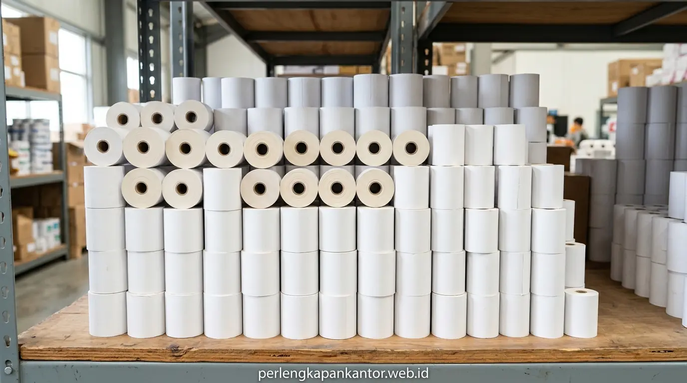

Jual Kertas Thermal Roll Grosir Murah untuk Printer Kasir Jakarta
Layanan jual kertas thermal grosir jakarta menghadirkan gulungan kertas struk kasir thermal roll 80x80mm dan 57x50mm bebas BPA, hasil cetak hitam pekat tahan lama, dan siap kirim instan hari ini.


Kertas kasir thermal roll kualitas tinggi menjamin kelancaran operasional transaksi kasir POS, mesin EDC perbankan, dan antrean tiket kantor di Jakarta.
- Cetak Tajam & Awet: Lapisan zat pewarna termal bermutu tinggi tahan luntur hingga 5–7 tahun untuk pembukuan akuntansi.
- Format Lengkap: Tersedia varian printer POS kasir (80x80 mm, 80x50 mm) serta EDC mobile Bluetooth (57x50 mm, 57x30 mm, 57x40 mm).
- Harga Grosir Distributor: Diskon kuantitas kartonan hingga 30% memangkas pengeluaran rutin toko, restoran, klinik, dan korporasi.
- Layanan Cepat Jabodetabek: PerlengkapanKantor melayani pengiriman Same-Day, garansi retur produk, dan faktur pajak PPN resmi.
- Mengapa Kualitas Kertas Thermal Roll Sangat Mempengaruhi Kelancaran Bisnis Kasir?
- Apa Saja Standar Ukuran Kertas Struk Kasir Thermal yang Paling Banyak Digunakan?
- Bagaimana Ciri Kertas Thermal Berkualitas Tinggi yang Bebas Debu dan Bebas BPA?
- Tabel Komparasi Ukuran & Estimasi Harga Grosir Kertas Thermal Kasir Jakarta
- Bagaimana Cara Menyimpan Stok Kertas Thermal Agar Tahan Bertahun-Tahun Tanpa Pudar?
- Mengapa PerlengkapanKantor Menjadi Supplier Kertas Thermal Terpercaya di Jakarta?
- FAQ: Pertanyaan Seputar Pemesanan Kertas Thermal Grosir & Kontrak Rutin
- Kesimpulan Praktis
Mengapa Kualitas Kertas Thermal Roll Sangat Mempengaruhi Kelancaran Bisnis Kasir?
Kualitas kertas thermal roll menentukan ketajaman struk transaksi kasir, melindungi printhead printer thermal dari abrasi debu, dan menjaga keabsahan bukti audit keuangan.
Bagi pengambil keputusan di sektor retail, jaringan restoran, hotel, apotek, maupun tim logistik korporat, kehabisan kertas kasir atau mendapati struk transaksi yang cepat memudar dalam beberapa minggu adalah masalah operasional yang merugikan. Kertas thermal murah berkualitas rendah sering kali menghasilkan serbuk kertas (lint) berlebih yang menyumbat pemotong otomatis (auto-cutter) dan merusak elemen pemanas printhead printer thermal seharga jutaan rupiah.
Berdasarkan data Asosiasi Pulp dan Kertas Indonesia (APKI, 2024), kebutuhan kertas thermal nasional untuk sistem Point of Sale (POS) dan logistik tumbuh lebih dari 22% per tahun seiring adopsi transaksi cashless. Sementara itu, survei Retail POS Transactions Benchmark (2025) mencatat bahwa 76% konsumen mengeluhkan struk bukti pembayaran yang tidak terbaca saat mengajukan klaim garansi produk atau reimbursement kantor.
Apa Saja Standar Ukuran Kertas Struk Kasir Thermal yang Paling Banyak Digunakan?
Standar ukuran mencakup lebar 80 mm untuk printer kasir meja kasir POS resto/supermarket dan lebar 57 mm untuk mesin EDC perbankan serta printer Bluetooth portabel.
Memilih ukuran kertas thermal yang tepat memastikan kompatibilitas mesin dan kerapatan gulungan yang maksimal:
Format paling populer untuk printer desktop POS (Epson, Star, Iware, Sunmi) di restoran, minimarket, department store, dan sistem tiket antrean bank.
Format standar untuk mesin EDC gesek kartu bank (BCA, Mandiri, BRI, BNI) serta printer kasir mini mobile kasir UMKM.
Ukuran gulungan ramping khusus printer saku Bluetooth kurir logistik (PPOB) dan kasir food truck fleksibel.
Gulungan berdiameter besar khusus mesin tiket dispenser parkir otomatis mandiri (unattended kiosk).
Bagaimana Ciri Kertas Thermal Berkualitas Tinggi yang Bebas Debu dan Bebas BPA?
Ciri kertas thermal berkualitas tinggi meliputi permukaan halus mengilap, hasil cetak hitam pekat merata, potongan tepi presisi tanpa serbuk kertas, dan sertifikasi BPA-Free.
Kertas thermal bekerja dengan memanfaatkan reaksi kimia antara lapisan leuco dye dan developer saat terkena panas printhead. Produk bermutu tinggi dari PerlengkapanKantor memiliki keunggulan teknis yang jelas:
- Coreless / Small Core Technology: Menggunakan selongsong plastik sangat tipis atau tanpa core sama sekali (coreless), sehingga panjang gulungan kertas jauh lebih maksimal dibanding kertas murahan berongga besar.
- BPA-Free Certification: Aman bagi kesehatan kulit tangan kasir yang menyentuh ribuan struk setiap hari tanpa risiko terpapar zat karsinogenik Bisphenol-A.
- Lapisan Pelindung Ekstra: Tahan terhadap percikan air ringan, minyak, dan gesekan mekanis saat struk dimasukkan ke dalam dompet.

Gulungan kertas thermal roll terbungkus aluminium foil kedap udara menjaga sensitivitas lapisan termal dari kelembapan suhu ruangan.
Tabel Komparasi Ukuran & Estimasi Harga Grosir Kertas Thermal Kasir Jakarta
Tabel komparasi menyajikan rincian ukuran, peruntukan perangkat kasir, isi kemasan per dus, dan estimasi harga grosir tiering distributor di Jakarta.
Berikut daftar perbandingan spesifikasi kertas thermal roll kasir di PerlengkapanKantor:
| Ukuran Kertas (Lebar x Diameter) | Peruntukan Mesin Printer | Isi Kemasan per Karton | Estimasi Harga Grosir / Roll |
|---|---|---|---|
| Thermal 80 x 80 mm | Printer Kasir Desktop POS, Restoran, Kios Karcis | 50 Roll / Karton (Aluminium Foil) | Rp 6.800 – Rp 8.200 |
| Thermal 80 x 50 mm | Printer POS Kompak, SPBU, Antrean Bank | 50 Roll / Karton | Rp 4.600 – Rp 5.500 |
| Thermal 57 x 50 mm | Mesin EDC Bank (BCA/Mandiri/BRI), Mesin Kasir Mini | 100 Roll / Karton | Rp 3.500 – Rp 4.200 |
| Thermal 57 x 40 mm | Mesin EDC Portable GPRS, Printer Bluetooth Kasir | 100 Roll / Karton | Rp 2.700 – Rp 3.300 |
| Thermal 57 x 30 mm | Printer Bluetooth Mobile Saku PPOB Kurir | 100 Roll / Karton | Rp 1.900 – Rp 2.400 |
Bagaimana Cara Menyimpan Stok Kertas Thermal Agar Tahan Bertahun-Tahun Tanpa Pudar?
Cara penyimpanan terbaik adalah menjauhkan kertas thermal dari paparan sinar matahari langsung, menghindari suhu ruangan di atas 35°C, dan menyimpan di dalam karton tertutup.
Untuk menjaga kualitas zat termal tetap peka saat dicetak, perhatikan 3 kaidah penyimpanan gudang berikut:
- Hindari Panas & Sinar UV: Jangan meletakkan karton kertas thermal di dekat jendela kaca yang terkena terik matahari langsung atau di dekat mesin fotokopi yang mengeluarkan hawa panas.
- Jaga Kelembapan Relatif (45%–65% RH): Simpan stok di atas rak palet kayu/besi minimal 15 cm dari lantai agar tidak lembap.
- Jangan Buka Foil Pembungkus Sebelum Dipakai: Setiap roll kertas kami dibungkus plastik/foil kedap udara untuk mencegah oksidasi dini.
Mengapa PerlengkapanKantor Menjadi Supplier Kertas Thermal Terpercaya di Jakarta?
PerlengkapanKantor memberikan jaminan ketersediaan stok ribuan karton, harga tiering grosir distributor, layanan pengiriman darurat instan, dan penerbitan faktur pajak resmi.
Kami telah menjadi mitra andalan bagi ratusan jaringan waralaba retail, F&B, perhotelan, perbankan, dan kantor logistik di wilayah Jakarta, Bogor, Depok, Tangerang, dan Bekasi. Dengan kapasitas logistik terpadu, kami menjamin pesanan kertas thermal Anda sampai tepat waktu tanpa risiko mengganggu antrean pembayaran pelanggan Anda.
Pesan paket kebutuhan kertas thermal dan ATK bulanan kantor Anda hari ini untuk menikmati potongan harga grosir terbaik.
FAQ: Pertanyaan Seputar Pemesanan Kertas Thermal Grosir & Kontrak Rutin
Berikut rangkuman pertanyaan yang sering diajukan terkait pembelian grosir kertas thermal kasir di Jakarta:
Kesimpulan Praktis
Menjaga ketersediaan kertas kasir thermal roll berkualitas tinggi adalah kunci kelancaran transaksi bisnis Point of Sale Anda. Dapatkan harga grosir tangan pertama dan pasokan stabil di Jakarta sekarang juga!
Penulis: Tim Spesialis Perlengkapan Kantor
Divisi spesialis perlengkapan kasir, media cetak, dan kertas perkantoran di PerlengkapanKantor. Menghadirkan solusi kertas thermal roll berkualitas tinggi untuk operasional bisnis retail dan korporasi.